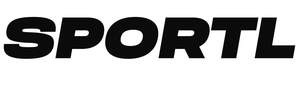

Trade Mark Journal No.2025/027 4 July 2025
UK00004222918 23 June 2025 (9,35,41,42)
Mark 1
SPORTL
Mark 2

- Class 9
- Downloadable software and mobile applications for use by fitness, exercise, physical and mental health, mindfulness and nutrition providers, corporate clients, and consumers; Downloadable software and mobile applications for checking fitness, exercise, physical and mental health, mindfulness and nutrition class schedules; Downloadable software and mobile applications for receiving and redeeming fitness, exercise, physical and mental health, mindfulness and nutrition-related product offers, enabling users to participate in fitness, exercise, physical and mental health, mindfulness and nutrition customer loyalty programs, gamification and social networking related to fitness, exercise, physical and mental health, mindfulness and nutrition; Downloadable electronic publications; Mobile application software enabling users to view, book, manage their reservation for a fitness class, mental health appointment and/or nutritionist appointment; Downloadable computer software incorporating aritifical intelligence, which monitors the booking capacity of gym classes to be able to dynamically price a gym class depending on the day and time of a particular gym class; Downloadable computer software allowing users to book last minute gym and fitness classes or activities; Computer software allowing gym owners and fitness clubs to upload specific gym classes that are not at capacity at a special price allowing users to book them on the same day; Computer software that enables users to make reservations and bookings for services relating to exercise and fitness such as gym classes; Computer software for customers and potential customers to interact with and to compare gym and fitness providers; Downloadable software for appointment management, event registration and automated class check in, notification, payment transactions, and for locating, geolocating and comparing gym and fitness providers; Software for personal information management; Computer software for accessing profiles for exercise, fitness, sport and health professionals, booking appointments with exercise, fitness, sport and health professionals; Computer software being application programming interface [API]; API software that enables access to computer systems of gyms and fitness clubs.
- Class 35
- Promotion of fitness, exercise, physical and mental health, mindfulness and nutrition activities via an online portal; Business assistance, management and administrative services, namely, enabling fitness, exercise, physical and mental health, mindfulness and nutrition service providers to manage the participation of users affiliated with certain employers and to run reports via an online portal; Business data analytics, namely, collecting and reporting fitness, exercise, physical and mental health, mindfulness and nutrition data, payment information and other business data to fitness, exercise, physical and mental health, mindfulness and nutrition businesses; Compilation of information into computer databases; Consumer loyalty services for commercial, promotional and/or advertising purposes, namely, administration of a program that allows members to redeem participation for points or awards relating to exercise, physical and mental health, mindfulness and nutrition; Advertising and promoting on behalf of third-parties; Price comparison services, namely, comparisons of gym and fitness club providers for commercial purposes provided online; Commercial information directory services on the internet featuring gym and fitness club providers and reviews of the aforementioned providers for commercial purposes, provided online; Providing an online commercial information directory on the internet featuring gym and fitness facility providers and reviews thereof for commercial purposes; Providing business information via a website; Providing assistance to customers in finding locations and service providers in the fields of exercise, fitness, sport and health via a website and mobile application; Providing personal services information over global computer networks for commercial purposes, namely, business and consumer advisory services provided by providing a searchable website featuring consumer information relating to the personal services of others; Information, consultancy and advisory services relating to all of the aforesaid; Provision of an online marketplace of gym and fitness club providers allowing users to check and compare costs of fitness classes; Promotional measures for the goods and services of others; The bringing together, for the benefit of others, a variety of sporting, wellness, nutrition, fitness, spa and/or health services, including sessions at yoga studios, fitness studios, gyms, spas, beauty salons and/or health clubs, enabling customers to conveniently view and choose those services from an internet website or software application; Loyalty, incentive and bonus program services; Arranging subscriptions to sporting, wellness, nutrition, fitness, spa and/or health services, including sessions at yoga studios, fitness studios, gyms, spas and/or health clubs; Statistical analysis and business reporting services for gyms and fitness clubs to monitor and understand capacity and booking data of their facilities.
- Class 41
- Sporting and cultural activities; Health and fitness club services; Reservation and booking of exercise and sport facilities; Reservation and booking of fitness, education, training, entertainment, sporting and cultural services; Reservation and booking of personal and group fitness training sessions; reservation and booking of sessions at sporting and exercise facilities, yoga studios, fitness studios, gyms and health clubs; Nondownloadable publications; Providing information, including online, about fitness, exercise, education, training, entertainment, sporting and cultural activities; Personal trainer services [fitness training].
- Class 42
- Design and development of computer software and computer hardware; Software as a service (SaaS); Platform as a service (PaaS); Platform as a service (PaaS) featuring computer software platforms for appointment management, notification, event registration, client services and payment transactions; PaaS featuring information, links, and electronic resources relating to exercise, fitness, sport and health; Application service provider (ASP) featuring software to enable or facilitate the uploading, downloading, streaming, posting, displaying, blogging, linking, sharing or otherwise providing electronic media or information; Providing a mobile application and/or website (software) featuring online advertisements for exercise, fitness, sport and health class recommendations and notifications regarding services available in the vicinity of the user based on user history, interest, location and preferences; Information, consultancy and advisory services relating to all of the aforesaid.
SPORTL LTD
Representative: Trademark Brothers Ltd.